收录于合集
以下文章来源于政治经济学新时空 ，作者NHPE研究小组
 政治经济学新时空 .
政治经济学新时空 .
「政经新时空」致力于政治学与经济学在理论（议题）关切而非方法（技术）应用上的融合，以期推动对重大政治经济问题的研究。谋求发展为横跨政治学和经济学，囊括社会学、人类学等在内的综合性社会科学交流平台。

作品简介
作者：
王凯，上海外国语大学国际关系与公共事务学院讲师、上海全球治理与区域国别研究院区域国别数据科学实验室主任；
朱昀晖，中共中国农业银行党校员工；
张绍铎，上海外国语大学国际关系与公共事务学院副教授。
来源： 《外交评论》，2021年第5期
文章导读
01
引言
自2019年至今，美国国会先后通过了涉及中国香港和新疆等问题的提案干涉中国内政，使得大众和国内研究者开始重拾对美国国会的关注和研究兴趣。美国国会是世界上少有的实权国会之一，它通过制订具有长期法律效力的成文法律，或是通过不具备法律效力但是体现国会多数议员意志的法案来影响美国的内政外交，而这些最终成为法律或集体意志表达的法案就来自国会议员的初始提案，因此，研究美国国会的涉华行为必须从这些初始提案开始。
国内外学者在探究美国国会对中美关系的影响方面已经产出了许多高质量成果。在定性研究方面，学者们往往结合案例剖析国会与涉华行为体之间的互动过程。国会与中美关系研究的另一重要取向、同样也是本文继承和效仿的研究路径，则是采取定量研究方法来探究国会涉华提案的影响因素。已有研究对学界及大众了解美国国会的涉华提案有着重要意义，但是依然存在一些问题，或者说留下了很多推进的空间。其一，学界需要新的、整合式的涉华提案数据库来进一步深化该议题的研究；其二，既有研究的描述性依然多过解释性，在提案涉及领域变化、对华态度变化和生存状态等多个方面，研究者都可以提出更多问题并给出解释；其三，研究过于偏重那些典型的、成功立法的、负面的涉华提案，难以把握美国国会涉华提案的全貌。
通过借鉴既有研究的经验，本文系统性地阅读、整理了美国国会官方信息网站2001-2019年涉华提案的大量信息，共收集866份涉华提案，定义并测量了每份提案的15个变量的数据，这些提案及其变量信息共同组成了“2001-2019年美国国会涉华提案数据库”【注：未来作者将不断完善该数据库】。它不仅向大众提供了一个全面了解美国国会涉华提案的窗口，而且有助于研究者去探索一系列涉及中美关系的问题。为未来的美国国会涉华提案研究提供一个可供批评指正和扩展的标靶。
本文在介绍数据库和描述性统计之后，系统地探究了经贸合作和府会政治对涉华提案以及中美关系的影响，研究结果发现：第一，中美经贸关系的发展，尤其是美国对中国产品的进口，有助于减少涉华消极提案数量，但是没有统计证据表明经贸关系能够对涉华积极提案数量产生影响；第二，执政党议员在一致政府期间提出的涉华提案要远多于分立政府时期，而在野党议员在分立政府时期提出了更多的提案。这些证据表明，府会关系确实能够影响国会的涉华态度和中美关系，但是这种影响会受执政党党派、选举周期和中美关系等因素的调控。
02
美国国会提案类型和立法流程
一般而言，美国国会的提案（Bill）可分为五类：议案（Bills）、联合决议案（JointResolutions）、修正案（Amendment）、共同决议案（Concurrent Resolutions）、简单决议案（Simple Resolutions）。其中，简单决议案和共同决议案无需经过总统签署，前者往往只涉及国会两院中一院关心的事务，因此只须一院通过，而后者往往涉及两院都关心的事务，所以须两院通过。两者皆无法律效力，其作用仅在于表达议员及议院对特定事件的态度。不过，即使不具有任何法律效力，简单决议案或共同决议案一旦获得通过,也向外部世界表明了美国国会在某一政策问题上的集体倾向，就能够对政府产生压力。议案、联合决议案及相应的议案修正案是具备法律效力的，须在两院都通过后经由总统签署方能生效，前两者的差别主要在于立法议题，其中，修正案附属于议案或联合决议案，其内容可以和主提案不同。
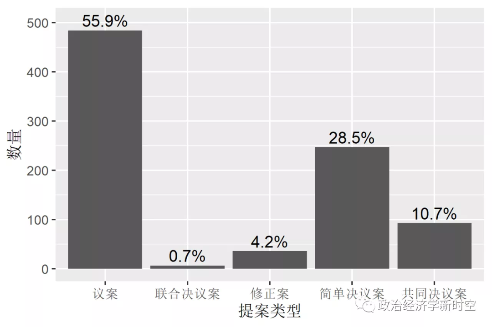
图-1 不同类型国会提案的数量分布
资料来源：本文所有图表都是根据本文的美国国会涉华提案数据库制作而成。
在本文数据库中“提案类型”这个变量的数量分布情是在总计866份提案中，议案484份、占比55.9%，联合决议案6份、占比0.7%，修正案36份、占比4.2%。对不具备法律效力的另外两类提案来说，简单决议案共247份、占比28.5%，共同决议为93份、占比10.7%。后两类提案的共同占比为39.2%，略小于1973—2006年46.9%的比例。
美国国会立法流程较为复杂，且与提案类型相关，但这实际上也是深入了解美国国会运作机制的一个重要切入点。因此，本文先分别介绍了参众两院的立法程序，再引出本数据库中的一个核心变量——涉华提案在国会立法程序中的生存状态。议案、修正案和联合决议案须通过初始议院、另一议院、总统签署成为正式法律，因此涉及这一类型提案的生存状态可以被分为五类（如下图所示）。
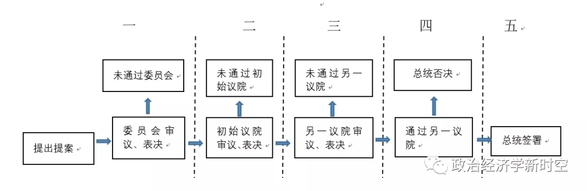
图2 美国国会提案的五阶段生存状态
提案的生存状态对于分析提案本身来说非常重要，研究者不仅要关注那些最终通过所有立法阶段的“成功案例”，也要关注那些在某阶段“失败”的案例，从而帮助公众理解什么因素会促进或阻碍提案一步步成为成文法律或决议。在现有研究的基础上，本文试图通过建立一个变量（提案的生存状态）来完全编码这五个过程，为未来研究提案的生存状态提供全面的数据支持。
03
美国国会涉华提案数据库介绍与分析
在本文构建的“2001—2019年美国国会涉华提案数据库”中，数据库设定的变量几乎涵盖了国内学者对涉华提案既有研究中的全部变量，并且在一些重要变量上改进了测量方式，这15个变量包括提案编号、名称、提出时间、初始议院、初审提案的委员会、初审委员会政党构成对比、类型、提出者姓名、提出者所在议院、提出者所代表的州、提出者当时的国会资历、提出者国会生涯时间段、涉及领域、对华态度、生存状态。
美国国会官方信息网站是本数据库的核心数据来源。本文作者通过该网站收集了三类信息：（1）搜索所有与中国直接或间接相关的提案。（2）提出提案议员的一些基本情况。（3）每份提案所在国会会期的两院各委员会民主、共和两党议员的构成情况。
下文将依次介绍和分析本文数据中提案的涉及领域、对华态度和生存状态三个重要变量，这三个变量都属于研究者较为感兴趣的待解释变量，随后再简述其他变量。
（一） 提案涉及领域归类
依据提案内容对其进行分类的方法有两种。其一，学者们根据具体的议题对涉华提案进行归类，如可分为“人权民主”、“国家安全”、“经贸”、“台湾”、“西藏”等议题。其二，如李莉所做的，则是将提案分为政治、台湾、安全和经贸等四大领域。本文采取了类似后者的分类方案，因为后者相比前者来说类别更少，更适合总结和使用量化方法进行分析。
在获取所有提案后,本文依议题和内容对其逐条分类，建立了一个类型变量，用来说明提案涉及的领域，具体分为政治、经济、科技和民事四个单独类别。政治类议题包括肆意干涉中国内政、人权问题、军事问题、政府层面交往问题、间谍纠纷等。经济类包括贸易、金融、投资和就业等议题。科技类主要涉及能源、通讯和环境保护三大领域的技术议题。民事类包括卫生医药问题、商旅签证问题、个别美国公民在华所涉纠纷、历史友谊纪念等议题。
2001—2019年提案涉及领域的总体分布显示，提案涉及的领域占比从政治（58.3%）、经济（22.6%）、民事（10.6%）、科技（8.4%）依次降低。从时间维度来看，涉华提案的总数在小布什时期一直处于高点。在奥巴马时期，除了2010年急速下降之外，整个时期呈现提案总数不断走低的趋势。在特朗普上台前两年，提案开始增多，2019年则出现了不同寻常的大幅增加。从涉及领域来看，政治类提案年均22.7件，在2001—2018年都保持在一个比较稳定的阶段，但是2019年陡增到97件。经济类提案2000—2011年处于高位、呈上升趋势，2019年大幅增加，且这些提案大部分对华态度都趋消极，2012年之后经济提案显著下降。民事类提案频率较低，但是在2009年和2016年之后的提案数量明显高于年度平均值。科技类提案在2007—2013年开始有明显增多的迹象。
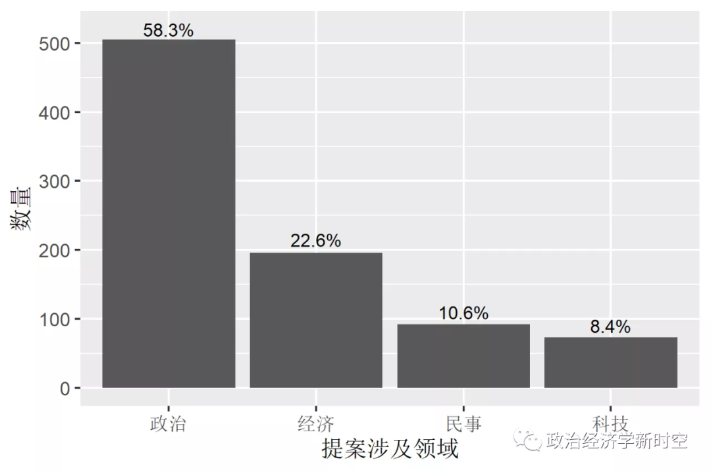
图-3 国会提案涉及领域分布
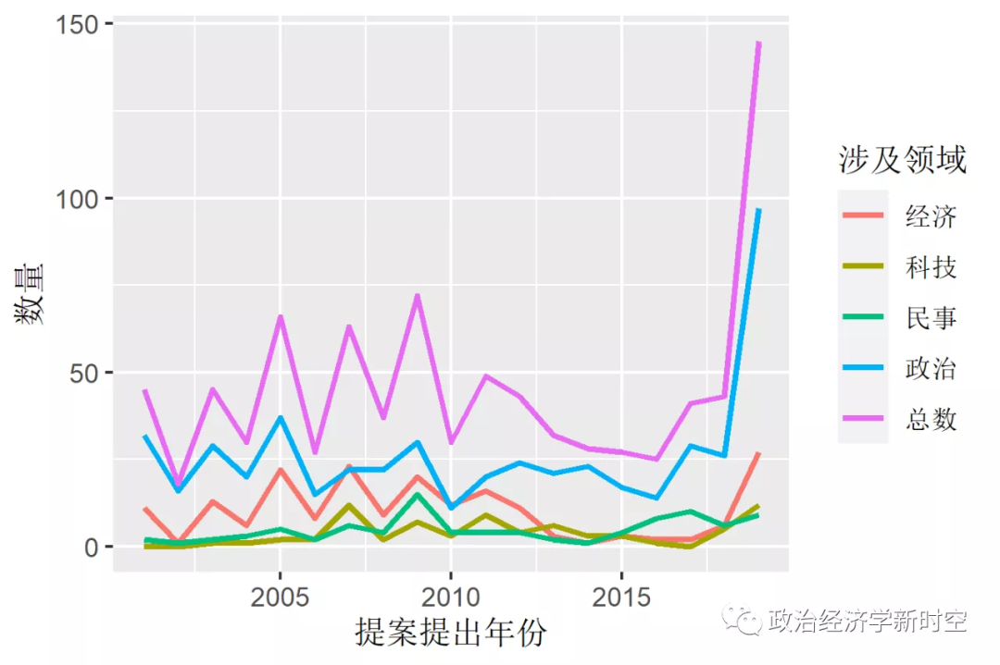
图-4 国会提案涉及领域时间变化趋势
（二）确定提案对华态度
**
**
提案的对华态度可以理解为提案中所反映的意图。国际关系中的意图指的是达成目标的战略偏好，冲突性、威胁性的战略偏好体现恶意，而合作性和沟通性的战略偏好展现善意。基于这样的理解，同时参考既有研究的测量方式，本数据库建立了另一个重要类型变量用以测量提案的对华态度，并将其分为积极、消极、中性三类。
积极提案的判断标准是依据提案是否体现了合作性和沟通性的战略偏好，是否旨在促进中美两国之间的交流、联系、互信与合作。消极提案的判断标准是依据提案是否体现了冲突性、威胁性的战略偏好，是否旨在增加己方并削弱对方的战略优势、是否增加了两国冲突和竞争。中性提案则包括两类：第一类中性提案难以通过提案内容来判断其意图，第二类中性提案是那些同时具有积极和消极意图的提案。例如，有提案要求取消由美国出资的在中国开展的艾滋病、成瘾药品、酗酒问题的研究，原因是成本太高昂，可拿回美国研究，这样项目效率更高，如2009年的H.Amdt.388提案。还有提案要求中国政府对中国国内的某些涉美极端言论做相应处理，以维护中美关系，如2005年的H.Amdt.479提案。
此外，本数据库并未包含那些仅仅在提案中涉及中国但其主旨并非涉及中国的提案。这类提案一般仅仅提及中国作为立法的诸多理由或背景之一，言语虽提及中国切身利益，但并未要求采取直接行动以对抗中国。
根据本文的数据库，在2001—2019年，美国国会中对华态度消极、积极和中性的提案数量及占比分别为695份（80.3%）、83份（9.6%）、88份（10.2%）。在1979—2006年的涉华提案中，持消极或敌意态度的提案占比为 67.9%、积极提案占比为10.7%。两者比较可以发现，新时期的消极提案比例平均而言有所上升，增加了12.4%，积极提案比例几乎保持不变，下降1.1%。如果比较不同领域提案的对华态度，可以发现政治、经济、科技和民事四类的对华态度消极比例依次递减，积极和中性比例基本上依次递增。其中政治提案中的消极比例高达90.9%、积极比例只有3.4%。经济和科技提案中的消极比例则分别下降至80.1%和74%、积极比例上升至8.7%和17.9%。民事提案的消极比例最低（27.2%）、积极比例最高（39.1%），并包含大量的中性提案（33.7%）。这些数据说明，在政治、经济和科技领域，美国国会涉华提案的消极态度居高不下，体现了两国在各个领域的竞争态势，只有在民事领域，美国国会提案的对华态度才更为复杂和积极。
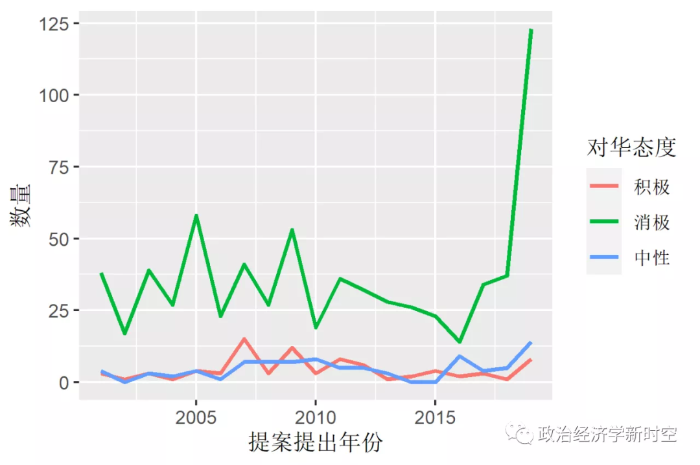
图-5 国会提案对华态度的时间变化
如果我们将对华态度和提案涉及的政治、经济领域做一个交互，并绘制时间趋势图，就会得到一些有趣的结果。政治积极类提案数量非常有限，仅仅出现在小布什政府的2001—2003年、2007年和奥巴马时期的2009—2014年，且这三段时期都伴随着政治消极类提案数量的减少。而在特朗普上台后，政治消极类提案飙升。在经济领域，小布什时期消极提案的数量大幅上升，在2005年和2007年达到高峰，体现了美国国会对中国经济迅速发展带来的中美贸易逆差、人民币汇率和知识产权等问题的焦虑。自2009年奥巴马政府上台之后，美国国会出现了积极提案增多、消极提案降低的明显趋势，但是这一趋势并未出现在政治领域。在特朗普时期，经济消极类提案迅速回升至2005—2007年间的水平。奥巴马时期对华消极提案数量减少主要来自经济类消极提案减少，该时期国会对华政治类消极提案数量降低有限，政冷经热现象较为明显。
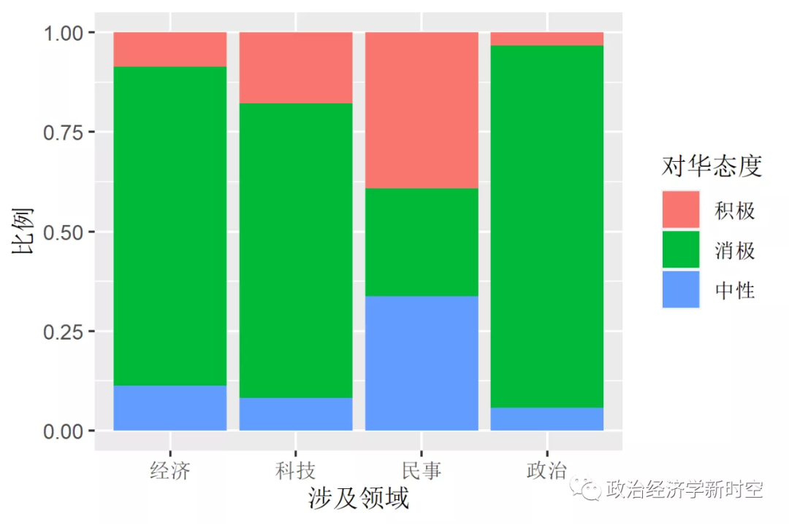
图-6 不同议题领域国会提案的对华态度
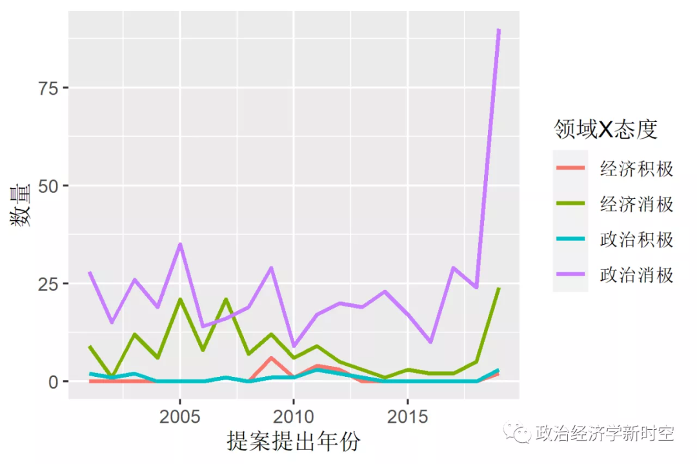
图-7 政治经济类提案对华态度的时间变化
不同党派议员的对华态度也是中国外交关心的重要问题。总体上，本文发现，共和党和民主党议员分别提出了499份和367份涉华提案，其中共和党提出的涉华提案中消极和积极类比例分别为86%和5.2%，而民主党的相应数字为72.5%和15.5%。由此可见，两党议员的提案中消极率都很高，民主党积极类提案比例相对更高。本文选取提案人的党派归属和提案的对华态度这两个变量，绘制它们在不同年份的变化趋势，则能发现一些有趣的趋势：平均来说，共和党人的消极提案数量要明显高于民主党人，积极提案数量则稍低于后者。共和党人和民主党人分别在2005年和2009年提出了数量远超平常的消极提案，2019年两党对华消极提案数均大幅上升。奥巴马任期内民主党人的对华消极提案数量基本逐年减少，共和党人的消极提案数量则每年基本保持稳定。其中，2018年是本文研究时间范围内唯一对华消极提案数量多于前一个奇数年的偶数年，预示了美国国会当时正在酝酿的对华消极态度。
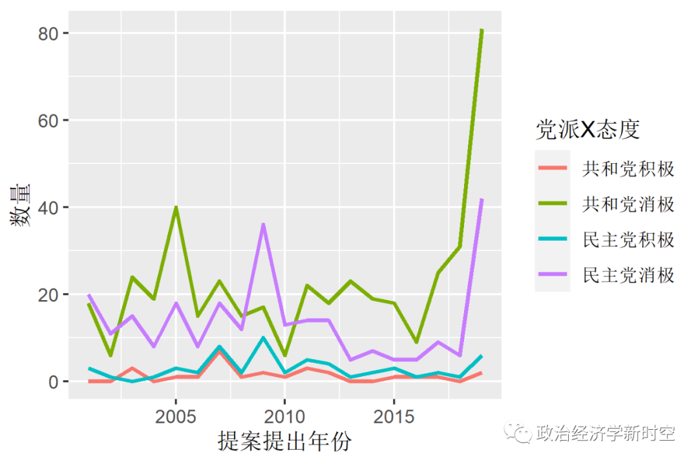
图-8 国会提案中党派对华态度的时间变化
（三）国会涉华提案的生存状态
对于议案、联合决议案和修正案这三种具有潜在法律效力的提案，它们需要通过委员会、初始议院、另一议院、总统签署四个环节才能成为法律，这些提案根据其生存历程可分为以下五类：（1）未通过委员会审议；（2）仅通过委员会、未通过提案所在的初始议院；（3）仅通过初始议院、未通过另一议院；（4）仅通过两院、遭总统否决；（5）经总统签署成为法律。
我们的数据发现，对于具备潜在法律效力的三种提案来说，占总数70.5%的提案未能通过委员会的审议阶段，9.3%的提案仅通过委员会、未能通过初始议院，13.1%的提案仅通过初始议院、未能在另一议院获得通过，0.4%的提案在两院都获得通过但是均被特朗普总统否决，其中一件专门涉及中国新疆，最终只有6.7%的提案、共计35件获得了总统签署。涉华提案最终成为法律的比例，高于众议院同期的总体签署比例（3.3%），这在很大程度上是因为这些涉华提案往往被附属在其他相对重要和常规性的提案中，例如2013年的一项拨款提案同时要求美国宇航局和美国科学院不得将从该提案中得到的预算，用来与中国进行任何形式的航空合作或者用来购买和中国有关系的信息产品。
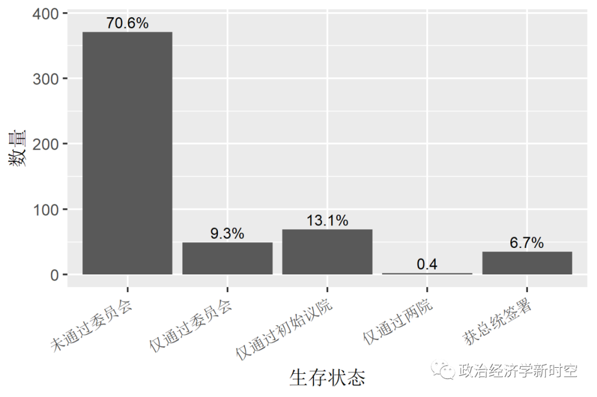
图-9 议案、联合决议案和修正案的生存状态
在这35份成为法律的提案中，有33份消极提案、2份积极提案。从时间上看，这些消极提案在小布什和奥巴马第一任期内出现的频率更高，在特朗普时期大幅增加。在这33份消极提案中，仅有6份消极提案的主题完全针对中国，其中3份涉及台湾问题，均由共和党议员分别在2003、2004和2019年提出，2份涉及西藏，乃由民主党议员在2006、2017年提出，1份涉及香港的提案则由共和党议员在2019年提出。
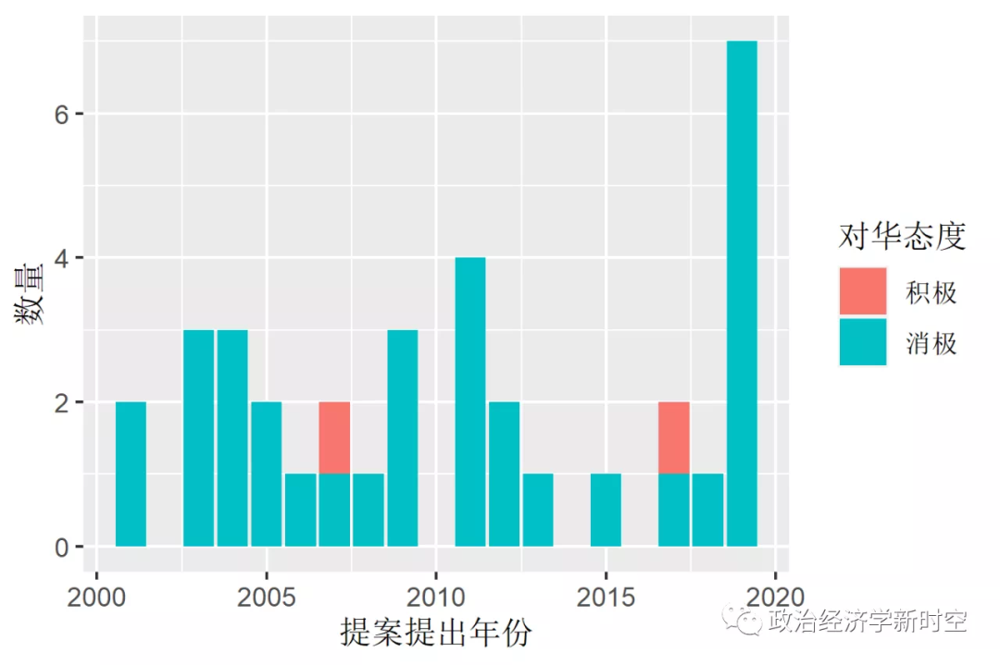
图-10 正式法案及其对华态度的时间分布
除去这些直接相关提案后，消极提案大部分都是在授权或拨款提案中添加限制与中国合作的条款，共21份提案。获得立法的积极提案仅有2份。2007年的《能源独立和安全》提案提到要与中国在内的一些国家加强在地热技术领域的合作，2017年的《华裔美国人二战老兵国会金奖》提案旨在表彰华裔美国人在二战中的贡献。
简单决议案未通过委员会的比例为58.7%，而一旦通过委员会后，几乎都会通过该议院的全体投票，仅有2.4%的提案会在这一阶段失败，成为正式决议案的成功比例高达38.9%，总体看来，简单决议案在委员会和初始议院两个阶段的生存概率都相对较高。
相比之下，共同决议案获得两院通过的比例极低。共同决议案在通过初始议院之后还需要通过另一议院的投票，它在委员会审议阶段的失败率就高达76.3%。一旦通过委员会后，仅有极小的比例（2.2%）会在初始议院被否决，通过初始议院之后的绝大部分提案（20.4%）都在另一议院遭到否决，仅有占全部提案总数1.1%（1件）的提案在另一议院获得通过。从这些数据可以看出，共同决议案的失败率非常高，想获得两院同时支持并通过难度非常大。唯一通过两院的涉华共同决议案发生在2001年12月13日。当日美国参众两院已经通过了《2002年国防授权》提案，但是众议院的共和党议员于当日提出了一个共同决议案对该提案进行修改，修改内容涉及中国的部分是细化了原提案中对国防部提交一份涉及中国军事领域进口信息报告的要求，该共同决议案在提出当日即在两院获得通过，最终体现在次年的正式国防授权提案中。
04
经贸合作与中美关系
经济与政治之间的相互关系是社会科学所关注的一对经典关系，根据国际关系学科中新自由制度主义的主张，经济上的相互依赖往往能够促进合作、减少冲突。为了验证中美经贸关系与政治关系的影响，我们将进一步利用本文构建的数据库。我们将该数据库转化为“州—年份”的面板数据，其中州指的是美国州级行政单位、年份则涵盖了2001—2019年从107届到115届的9届国会。在此基础上，我们在面板数据中增加了每年每个州与中国的经贸关系这个核心解释变量和其他控制变量，来探究中国与美国各州之间的经贸关系强度是否影响该州议员在国会提案中表现出来的对华态度。
具体来说，本文采取两种方式来测量中国与美国各州之间的经贸关系强度，即美国各州每年出口和进口中国商品的总价值分别占该州的州内生产总值的比例。为了避免遗漏变量偏误，本文还控制了可能同时影响因变量和自变量的一些协变量：（1）各州州内生产总值；（2）每年的中美关系指数；（3）美国的府会关系。依据张光和刁大明的分类法，本文将该变量分为一致政府（执政党控制国会两院）、弱分立（在野党控制国会一院）和强分立（在野党控制两院）三个类别。
在因变量方面，本文使用两种测量方式来度量各州国会议员所提出提案的总体对华态度：（1）每年每州议员提出的消极提案数量；（2）相应的积极提案数量。由于这两种方式测量的因变量都是计数变量，取值为非负整数，且其方差远大于平均值，因此，本文最合适的研究方法是使用专门针对此类数据的负二项回归。[2]此外，由于美国各州之间差别较大，各州的独特属性很大程度上会影响核心解释变量对因变量的影响，因此本文控制了州层次的固定效应。本文的模型为：
log（提案数量it） = 常数项 + 经贸关系it + 控制变量it+ 州固定效应i + 误差项it
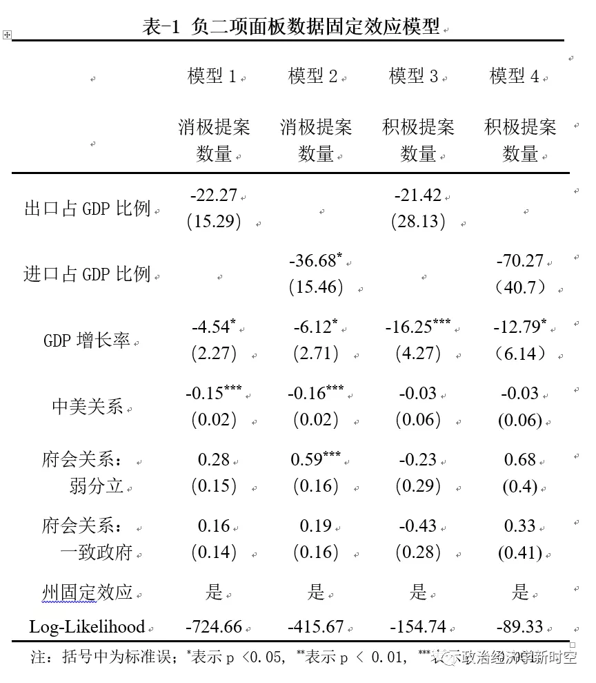
在该模型中，下标i代表州、下标t代表年份，回归分析的结果表明，本节所关注的核心解释变量——中美经贸关系的发展，尤其是美国对中国产品的进口，有助于减少涉华消极提案数量，但是没有强有力的统计证据表明经贸关系能够对涉华积极提案数量产生影响。在其他控制变量方面，国内生产总值增长率的提升能够显著地降低涉华消极提案的数量，但是前者对积极提案的类似抑制作用，可能受到国会中积极与消极提案数量同步增减的影响。中美关系的改善能够减少涉华消极提案的数量，但是无法对积极提案产生影响。在府会关系方面，弱分立状态相比其他情形能够增加消极提案。针对府会政治对涉华提案以及中美关系的影响，下一节着重讨论。
05
府会政治与中美关系
毋庸置疑，美国白宫和国会之间的府会政治能够影响中美关系。本节试图从结构性视角讨论这种影响的一个重要方面，即府会政治如何影响美国国会涉华提案的态度。
比较国内的国际关系研究和美国的议会政治研究，可以发现两个重要的区别：其一，两者的结论截然相反，前者倾向于认为分立和强分立政府带来更多立法倡议，后者倾向于讨论是否一致政府带来更多正式立法；其二，这种差异的背后还存在各自所使用的因变量的差异，前者关注的因变量是涉华提案的数量，而后者关注的因变量则是正式立法的数量。
利用本文的数据库，则可以帮助我们理解和验证上述国内外研究的核心观点。为了更加完善地验证和理解府会政治对国会涉华提案态度的影响，本文制订了更加严谨的研究设计。首先，既有研究忽视了府会政治中的一个重要内容，即使存在相同的府会关系结构，如一致政府，其对执政党和在野党议员各自涉华立法行为的影响显然是不同的，为此本文将是否为执政党作为另一个反映府会政治的变量。其次，本文使用消极度而非提案总数作为更准确地测量国会每年对华态度的指标。最后，在研究府会政治时应该尽可能剔除掉其他因素对国会涉华提案态度的影响。在本文的研究时间段内，2019年美国国会涉华提案态度的消极度陡增，明显区别于2001—2018年这一时间段，这种显著的差别很大程度上受到中美关系大环境的影响，因此，如果要讨论府会政治对中美关系的影响，有必要将2019年暂时排除在外。
基于上述设计，本文利用新数据库，根据体现府会政治的两个关键变量（府会关系、是否执政）分别计算和整理了2001—2018年两党议员涉华提案的消极度和涉华正式立法的消极度，并根据结果绘制了表-2和表-3。
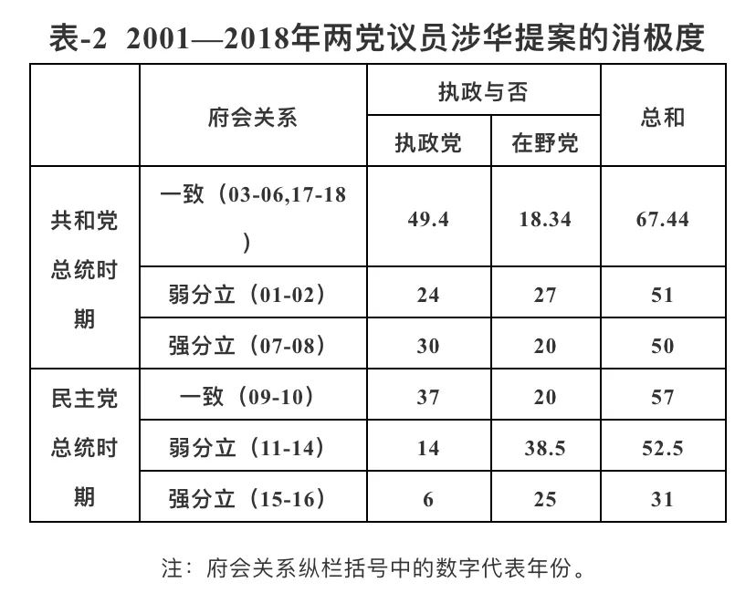
表-2的最后一列纵栏加总了执政党和在野党在每一种府会关系中涉华提案的消极度，从这一纵栏可以发现，无论共和党和民主党谁入主白宫，一致政府时期的涉华消极度都是相对最高的。而弱分立和强分立时期的消极度高低依然难以判定，这是因为府会关系对涉华提案消极度的影响，依然还会受哪个党派是执政党、选举周期和中美关系大环境的影响。综合以上分析可以发现，表-2的证据没有支持国内学者关于美国涉华提案数“在强分立、弱分立、一致政府应该依次降低”的结论，相反，一致政府时期的涉华提案或消极度明显高于分立时期，且这种府会政治主要通过影响执政党的动机而体现出来。此外，表-2的证据更加接近美国政治研究领域关于一致政府是否具有立法优势的讨论，但是由于这一研究议题关心的因变量是正式立法，因此，我们根据数据库中涉华正式立法的消极度绘制了表-3。

从表-3中可以发现和表-2相似的证据，即一致政府时期每届国会涉华正式立法的消极度，平均而言要高于分立时期，但是这种立法优势依然受到前述执政党党派等因素的影响。本节的讨论表明，府会关系确实能够影响国会的涉华态度和中美关系，但是这种影响还会受到执政党党派、选举周期和中美关系等因素的调控，诸多因素构成了一个较为复杂的府会政治脉络，只有更为完善的研究设计才可以帮助我们厘清其中的互动关系。
06
结论
美国作为具有全球影响力的大国，其国会涉华提案对中美关系的作用不言而喻，但是影响其国会立法的因素众多，包括国际层面的权力结构、中美双边关系，美国国内政治中的党争、府会关系、国内利益集团和政治精英等，而本文新建的2001—2019年数据库希望尽可能涵盖这些影响因素，提供公开全面、可以立即使用的新数据库，推进对这一议题的定性和量化研究。
本文的描述性研究发现，从时间维度上，在总计866份涉华提案中，小布什时期的提案数量处于高点，奥巴马时期提案总数不断下降，特朗普上台之后则有明显回升。在涉及议题方面，政治领域提案约占一半稍多，经济、民事和科技领域的提案数量依次降低。在涉华态度方面，态度消极、积极和中性的提案占比分别为80.3%、9.6%和10.2%，其中政治类提案的消极比例最高、民事类最低，总体消极比例略高于1979—2006年的67.9%。就提案生存状态而言，在第一类具备潜在法律效力的提案中，仅有35件、6.7%的提案成为正式法律，其中有33份消极提案。大部分消极提案都是在授权提案中添加的限制与中国合作和交流的条款，仅有6份消极提案的主题完全针对中国，包括3次台湾问题、2次西藏问题 、1次香港问题。共同决议案和简单决议案顺利通过所有立法流程的比例分别为1份、1.1%和96份、38.9%。
本文在介绍数据库和执行描述性统计之后，系统性地探究了经贸合作和府会政治对涉华提案以及中美关系的影响。在经贸关系方面，中美经贸关系的发展，尤其是美国对中国产品的进口，有助于减少涉华消极提案数量，但是没有统计证据表明经贸关系能够对涉华积极提案数量产生影响。此外，国内生产总值增长率的提升和中美关系的改善，能够减少涉华消极提案的数量。在府会政治方面，执政党议员在一致政府期间提出的涉华提案远多于分立政府时期，而在野党议员在分立政府时期提出了更多的提案。在一致政府时期，每届国会涉华正式立法的消极度平均而言要高于分立时期。这些证据表明，府会关系确实能够影响国会的涉华态度和中美关系，但是这种影响会受到执政党党派、选举周期和中美关系等因素的调控。
本文的数据和分析有助于美国国会研究的发展，但是本文的结论并非定论，对相关问题的讨论还需要更为完善的研究设计。未来的研究可以在多方面展开：首先，众多的变量及其组合有助于我们发现新的研究问题或是回答老问题，并在定性研究中更为精准地选择案例，或是在定量研究中决定合适的样本和数据结构；其次，新数据库中的众多变量如提出者党派、所在议院、提出人的资历、初审委员会的政治构成，都可以很方便地直接拿来作为未来研究的解释变量；再次，本文的三个待解释变量都值得使用更为精细的研究设计进行讨论，如提案的生存状态可以运用生存分析等方法进行研究。可以想见，结合本文的数据、发现与既有研究的贡献，必将有助于我们进一步理解和把握美国国会涉华行为的原因、趋势和影响。
排版 | 梁羽
文章观点不代表本平台观点，本平台评译分享的文章均出于专业学习之用, 不以任何盈利为目的，内容主要呈现对原文的介绍，原文内容请通过各高校购买的数据库自行下载。